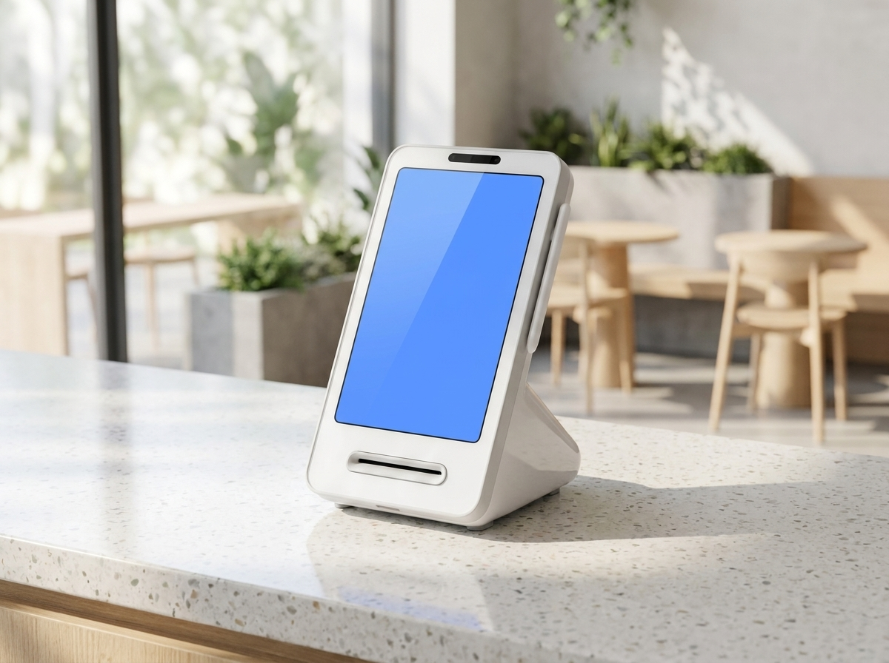

서울 사장님, 담보가 부족해도 정책자금 받는 법 — 서울신용보증재단 활용 가이드
담보력이 부족해 은행 문턱을 넘기 힘든 서울 소재 개인·법인 사업자라면, 서울신용보증재단(seoulshinbo.co.kr)의 신용보증서를 통해 저금리 정책자금 대출을 이용하는 길이 있습니다. 재단은 서울시가 운영하는 '서울시 소상공인 종합지원 포털'로, 담보 대신 신용보증서를 발급해 자금 조달을 돕고 경영 컨설팅·교육까지 지원합니다. 창업이나 매장 운영자금이 필요한 서울 사장님이라면 가장 먼저 확인해볼 만한 공적 지원기관입니다. 단, 지원 대상·한도·금리·상품은 수시로 변동되므로 아래 내용은 방향을 잡는 참고로만 보시고, 신청 전에는 반드시 서울신용보증재단 공식 채널에서 최신 조건을 확인하셔야 합니다.
서울신용보증재단은 무엇을 해주나요
서울신용보증재단은 담보력이 부족한 서울 소재 개인·법인 사업자에게 신용보증서를 발급하는 기관입니다. 이 보증서를 근거로 협약 금융기관에서 저금리 정책자금 대출을 이용할 수 있습니다. 쉽게 말해, 사업자에게 담보나 확실한 신용이 부족할 때 재단이 '보증'을 서 주어 자금의 물꼬를 터 주는 역할입니다.
담보가 곧 자금력으로 통하는 현실에서, 이제 막 사업을 시작했거나 규모가 크지 않은 사장님은 사업성이 좋아도 대출 심사에서 밀리기 쉽습니다. 재단의 신용보증서는 바로 이 지점을 메워 주는 장치입니다. 부동산 같은 담보가 없어도 재단이 사업의 신용을 보증해 주면, 협약 금융기관은 그 보증서를 근거로 자금을 내줄 수 있습니다. 담보가 부족하다는 이유만으로 자금 계획을 접어 두었던 사장님이라면 검토해 볼 가치가 있습니다.
자금 지원 외에도 재단은 경영 컨설팅과 교육 등 소상공인의 실질적인 운영을 돕는 프로그램을 함께 제공합니다. 창업 초기라 무엇부터 챙겨야 할지 막막한 사장님, 운영 중 자금 흐름이 빠듯해진 사장님 모두에게 열려 있는 창구입니다. 특히 컨설팅과 교육 프로그램은 자금을 빌리는 것 이상의 의미가 있습니다. 매출 관리, 세무, 마케팅처럼 혼자 판단하기 어려운 영역을 전문가와 함께 점검하면, 확보한 자금을 어디에 어떻게 쓸지 계획을 세우는 데도 도움이 됩니다.
누가, 어떻게 신청하나요
핵심 자격은 '서울 소재' 사업자라는 점입니다. 서울에 사업장을 둔 개인·법인 사업자가 대상이며, 서울 외 지역은 각 지역의 신용보증재단을 확인해야 합니다. 신청은 재단 웹사이트, 모바일 앱, 전화 등 여러 경로로 가능합니다.
신청 전에 사업자등록 상태, 매출 흐름, 사업장 임대차 관계 등 기본적인 사업 현황을 정리해 두면 이후 상담과 신용조사가 한결 수월합니다. 다만 실제로 요구되는 서류와 요건은 신청 시점과 상품에 따라 다르므로, 준비 목록도 공식 채널에서 미리 확인하는 편이 안전합니다.
| 구분 | 내용 |
|---|---|
| 운영기관 | 서울신용보증재단 (서울시 소상공인 종합지원 포털) |
| 핵심 지원 | 신용보증서 발급 → 저금리 정책자금 대출 이용 |
| 부가 지원 | 경영 컨설팅·교육 등 |
| 대상 | 담보력 부족한 서울 소재 개인·법인 사업자 |
| 신청 경로 | 재단 웹사이트 · 모바일 앱 · 전화 |
| 신용보증부 문의 | 02-2174-5266 |
| 공식 사이트 | seoulshinbo.co.kr |
위 표의 대상·지원 범위는 정책 방향을 요약한 것입니다. 실제 적용되는 대상 요건, 보증 한도, 금리, 취급 상품은 시기에 따라 달라지므로 표의 내용을 단정적으로 받아들이지 마시고 공식 확인을 거치시기 바랍니다.
보증 신청 절차는 이렇게 진행됩니다
재단의 신용보증은 대체로 다음 흐름으로 진행됩니다.
- 상담·보증접수 — 웹사이트, 앱, 전화로 상담을 신청하고 보증을 접수합니다.
- 신용조사 — 사업 현황과 신용 상태를 확인합니다.
- 보증심사 — 보증 가능 여부와 조건을 심사합니다.
- 보증서 발급 — 심사를 통과하면 신용보증서가 발급되고, 이를 근거로 금융기관 대출을 진행합니다.
절차 중 필요한 서류나 세부 조건은 신청 시점의 안내를 따르는 것이 정확합니다. 궁금한 점은 신용보증부(02-2174-5266)나 재단 공식 채널로 문의하는 것이 가장 확실합니다.

자금이 준비됐다면, 매장 셋업도 함께
정책자금으로 창업 자금이나 운영자금을 확보했다면, 그다음은 매장을 실제로 굴러가게 만드는 설비 구성입니다. 특히 결제·주문 환경은 첫날부터 손님을 맞아야 하는 핵심 요소입니다.
누리네트웍스는 수도권 지역의 POS·결제단말·키오스크·테이블오더 대리점으로, 창업 준비 단계부터 매장 성격에 맞는 장비 구성을 함께 설계해 드립니다. 카페·음식점·소매점 등 업종에 따라 필요한 POS 사양이 다르고, 홀 회전율이 중요한 매장이라면 테이블오더나 키오스크로 인건비 부담을 덜 수 있습니다. 애플페이·삼성페이·네이버페이·카카오페이 등 간편결제 대응과 토스·네이버 단말기까지, 요즘 손님들이 기대하는 결제 수단을 빠짐없이 갖추는 것도 매출과 직결됩니다.
자금은 재단에서, 매장 설비는 누리에서 — 이렇게 역할을 나눠 준비하면 창업·재정비 과정이 한결 수월해집니다.

신청 전 꼭 기억할 점
정책자금과 보증은 조건이 자주 바뀌는 영역입니다. 온라인 후기나 지인의 경험담은 시점에 따라 사실과 달라질 수 있으니, 대상 여부·한도·금리·상품은 반드시 서울신용보증재단 공식 웹사이트(seoulshinbo.co.kr)나 신용보증부(02-2174-5266)에서 본인 상황 기준으로 직접 확인하세요. 특히 서류와 심사 기준은 신청 시점 안내가 가장 정확합니다.
자주 묻는 질문(FAQ)
Q. 서울이 아닌 사업자도 서울신용보증재단을 이용할 수 있나요?
서울신용보증재단은 서울 소재 사업자를 대상으로 하는 기관입니다. 서울 외 지역 사업자는 해당 지역의 신용보증재단을 확인하시는 것이 맞습니다. 본인 사업장 주소 기준 자격은 공식 채널에서 확인하세요.
Q. 담보나 보증인이 없어도 자금을 받을 수 있나요?
서울신용보증재단은 담보력이 부족한 사업자를 위해 신용보증서를 발급해 저금리 정책자금 대출을 이용하도록 돕는 것이 핵심 역할입니다. 다만 신용조사와 보증심사를 거치므로, 지원 여부는 심사 결과에 따라 결정됩니다.
Q. 한도와 금리가 궁금합니다. 얼마나 받을 수 있나요?
대상·한도·금리·상품은 수시로 변동되며 사업자마다 조건이 다릅니다. 구체적인 수치는 이 글에서 단정할 수 없으므로, 반드시 서울신용보증재단 공식 사이트나 신용보증부(02-2174-5266)에서 최신 기준으로 상담받으시기 바랍니다.
Q. 자금 승인 후 매장 결제 장비는 어디서 준비하나요?
POS·키오스크·테이블오더·결제단말 구성은 누리네트웍스로 문의하시면 업종과 매장 규모에 맞춰 안내해 드립니다. 창업 셋업 단계부터 상담이 가능합니다.
창업이나 매장 재정비를 앞두고 계신다면, 자금 준비와 함께 결제·주문 환경 구성도 미리 챙겨두세요. 누리네트웍스가 수도권 사장님의 매장 셋업을 함께 준비해 드립니다.
- 📞 전화상담 1544-7754
- 🌐 홈페이지 nwpos.co.kr